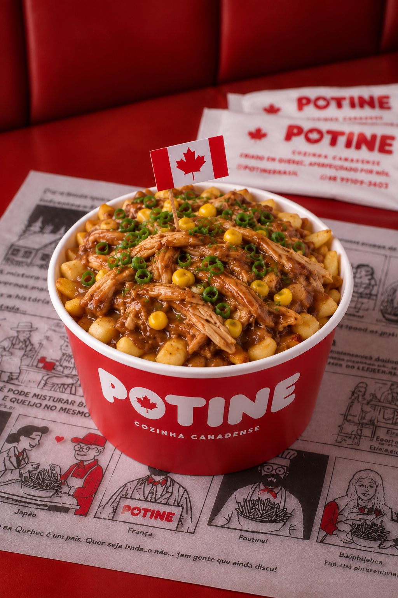
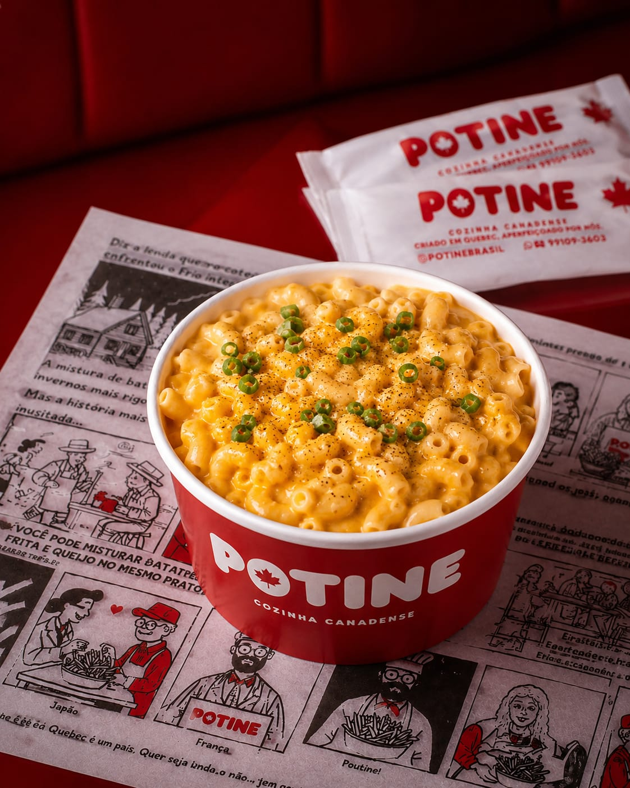

Escolha seu
favorito
A nossa versão do clássico canadense.

Double Pork
Batatas cobertas com o autêntico molho canadense, bacon, pernil acebolado, queijo coalho, finalizadas com maple syrup e cebolinha.

Quebec Pleasure
Batatas com costela bovina extremamente suculenta, cebola, queijo coalho grelhado e nosso molho canadense encorpado e marcante, finalizadas com cebolinha fresca.

Vancouver Vibes
Batatas com frango desfiado extremamente suculento, milho verde e Catupiry Original, envolvidas por nosso molho canadense encorpado e marcante, finalizadas com cebolinha fresca.
Massa envolvida em um creme de queijos derretidos, servida quentinha.
O prato definitivo para quem busca uma confort food.

Bacon
Macarrão envolvido em um creme de cheddar, Colby e Monterey Jack e bacon em cubos.

Costela
Macarrão envolvido em um creme de cheddar, Colby e Monterey Jack e costela desfiada.

Tradicional
Macarrão envolvido em um creme de cheddar, Colby e Monterey Jack. O clássico Mac & Cheese, simples, cremoso e cheio de sabor.
Massa artesanal canadense feita na hora, finalizada com a cobertura da sua escolha.
A sobremesa perfeita para fechar a experiência com chave de ouro.

Kinder Bueno
Massa artesanal canadense, feita na hora, com creme Bueno e Nutella, finalizada com pedaços de Kinder Bueno.

Ninho com Nutella
Massa artesanal canadense, feita na hora, com creme de leite Ninho e Nutella.

Chocolate Meio Amargo & Castanhas
Massa artesanal canadense, feita na hora, com brigadeiro meio amargo e mix de castanhas.